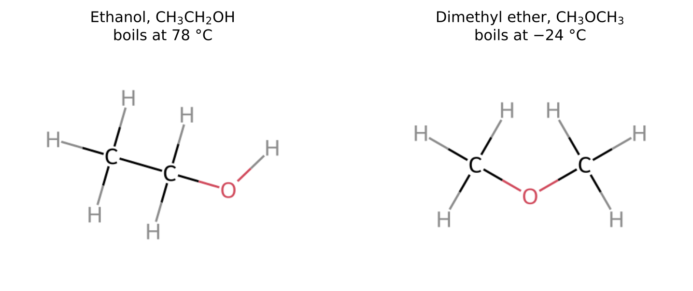
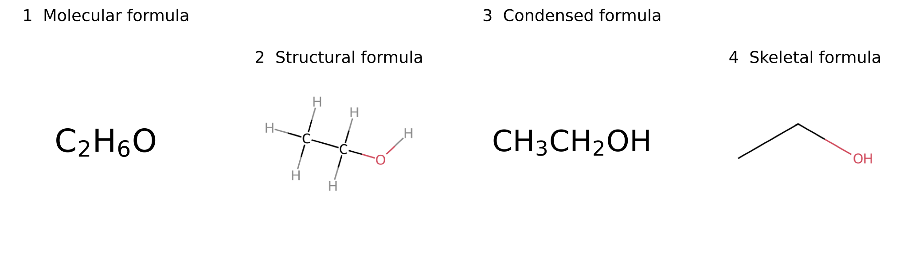
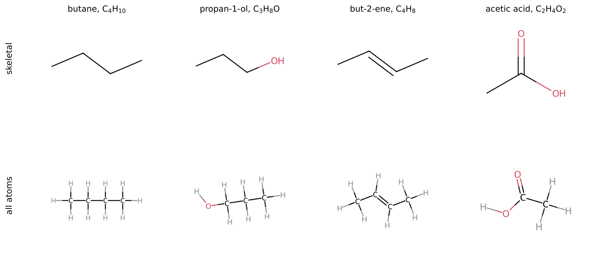
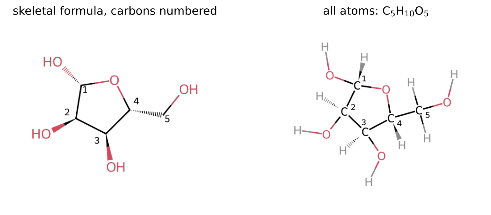
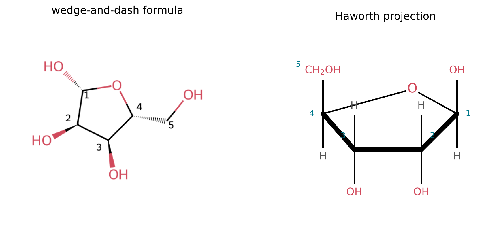
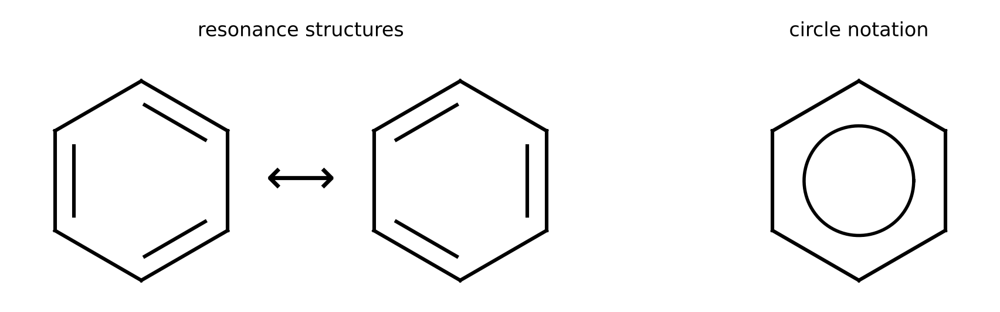
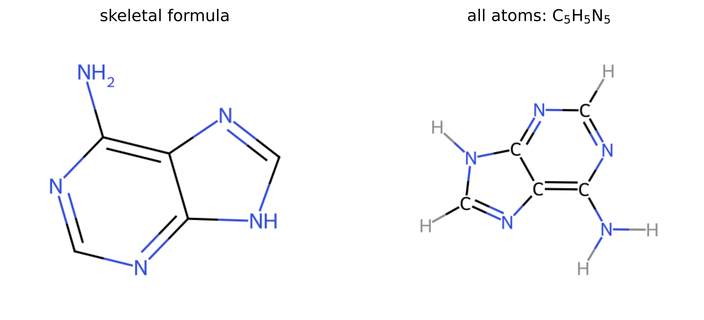

4 Reading Molecular Drawings
The question of this chapter
Open any book or paper on the chemistry of life and you will find pages covered with hexagons, zigzag lines and letters. These drawings are the language in which chemists describe molecules, and they carry more information than any amount of text. This chapter asks: how is a molecule drawn, and how can a drawing be read? It introduces the main types of chemical formula, explains the conventions of the skeletal formula used in almost all modern chemistry, and shows how three-dimensional shape is represented on a flat page. By the end of the chapter, you should be able to look at the drawing of a sugar or a nucleobase and count every atom in it.
4.1 One molecule, many drawings
Why the molecular formula is not enough
Chapter 2 introduced the chemical formula, such as H2O for water. A formula that gives only the number of atoms of each element in a molecule is called a molecular formula. For small molecules it is often all that is needed: there is only one way to join two hydrogen atoms and one oxygen atom so that each forms its usual number of bonds.
For larger molecules, the molecular formula is not enough. The formula C2H6O describes two different compounds. In ethanol, the alcohol of wine and beer, the two carbon atoms are bonded to each other and the oxygen is bonded to one of them and to a hydrogen atom. In dimethyl ether, the oxygen sits between the two carbon atoms. Both arrangements obey the bonding rules of Chapter 3 (carbon 4 bonds, oxygen 2, hydrogen 1), but they are different substances with different properties: at atmospheric pressure ethanol boils at 78 °C and is a liquid at room temperature, whereas dimethyl ether boils at −24 °C and is a gas (National Institute of Standards and Technology, n.d.). Compounds that have the same molecular formula but different structures are called isomers (Figure 4.1). They are the reason why chemistry needs drawings.

Four ways to draw ethanol
Chemists use several types of formula, which show the same molecule with different amounts of detail. Figure 4.2 shows ethanol in four of them.
- The molecular formula, C2H6O, gives the composition only.
- A structural formula shows every atom and every bond as in a Lewis structure, usually omitting the lone pairs.
- A condensed formula, CH3CH2OH, writes the atoms in the order in which they are connected, grouping each carbon with the hydrogen atoms attached to it.
- A skeletal formula shows the carbon framework as a zigzag of lines and leaves out the carbon atoms and the hydrogen atoms bonded to them.

Each type has its uses. The molecular formula is used to calculate masses (Chapter 6). The structural formula is the clearest for small molecules and for showing exactly which bonds change in a reaction. The condensed formula fits into a line of text. The skeletal formula is the most compact for large molecules, and it is the form in which almost all molecules in modern chemistry and biochemistry are drawn.
4.2 Structural and condensed formulas
Structural formulas
A full structural formula is a Lewis structure in which the lone pairs are usually left out. Every bond appears as a line: one line for a single bond, two for a double bond, three for a triple bond. To check a structural formula, count the lines at each atom. Every carbon must have four, every nitrogen three, every oxygen two and every hydrogen one, unless the atom carries a charge (Section 4.4).
The angles in a structural formula are not the real bond angles. A carbon atom with four single bonds is drawn as a cross with 90° angles for convenience, although in the molecule its bonds point to the corners of a tetrahedron, 109.5° apart (Chapter 3). A structural formula shows which atoms are connected, not the shape of the molecule.
Condensed formulas
A condensed formula lists the atoms along the main chain from one end to the other, writing each carbon followed by the hydrogen atoms attached to it. CH3CH2OH is read as: a carbon carrying three hydrogens, bonded to a carbon carrying two hydrogens, bonded to an oxygen carrying one hydrogen. Dimethyl ether is CH3OCH3. Bonds within the chain are not drawn, although double and triple bonds are often shown: ethylene is CH2=CH2 and hydrogen cyanide HC\(\equiv\)N.
Groups attached to the chain as branches are written in parentheses after the atom that carries them. Acetone, a common solvent, is CH3C(O)CH3 or (CH3)2CO: a central carbon bonded to two CH3 groups and double-bonded to an oxygen. A subscript after parentheses means that the group appears that many times.
The condensed formula of a group that recurs in many molecules soon becomes familiar. CH3– is a methyl group, –OH a hydroxy group, and –COOH a carboxy group (a carbon double-bonded to one oxygen and single-bonded to an –OH). Chapter 11 describes these and other functional groups and the chemistry they bring.
4.3 Skeletal formulas
The four rules
Large molecules contain dozens of carbon and hydrogen atoms, and drawing each one would bury the structure in letters. The skeletal formula avoids this. It is drawn according to four rules.
- Bonds are lines. Single bonds are drawn as single lines, double bonds as two parallel lines, triple bonds as three.
- Every corner and every line end is a carbon atom, unless another atom is written there. Chains of carbon atoms are drawn as zigzags, so that each carbon atom appears as a corner.
- Hydrogen atoms bonded to carbon are not drawn. Each carbon is understood to carry as many hydrogen atoms as it needs to make four bonds in total.
- All other atoms are written with their symbols, together with any hydrogen atoms attached to them: O, OH, N, NH2, P and so on.
The zigzag of rule 2 has a physical basis: in a chain of carbon atoms with tetrahedral bonds, the stretched-out shape of the chain really is a zigzag, with angles close to 109.5°. Skeletal formulas are drawn with 120° angles, which makes the zigzag regular on paper.
Reading a skeletal formula
To read a skeletal formula, find every carbon atom and work out its hydrogen atoms. For each corner or line end without a symbol, count the lines that meet there; the number of hydrogen atoms is four minus the number of bonds, counting a double bond as two and a triple bond as three. Figure 4.3 shows the procedure for several molecules, with the hidden hydrogen atoms written in grey.

Three patterns appear so often that they are worth recognising at a glance:
- a line end is a CH3 group (one bond, so three hydrogen atoms);
- a corner where two single lines meet is a CH2 group;
- a corner where three single lines meet is a CH group, and one where four meet is a carbon with no hydrogen.
A carbon atom that forms a double bond and one single bond, as in but-2-ene, carries one hydrogen; a carbon atom double-bonded to oxygen and single-bonded to two other atoms, as in acetone or acetic acid, carries none.
Rings
Carbon chains can close into rings, and skeletal formulas show rings as polygons. A hexagon with no symbols at its corners is cyclohexane, C6H12: six carbon atoms, each a corner with two lines, and so each carrying two hydrogen atoms. Rings can contain atoms other than carbon, such as oxygen or nitrogen; these are written at the corner they occupy. A ring containing at least one atom other than carbon is called a heterocycle. The sugar of RNA and the four nucleobases are all heterocycles.
A worked example: ribose
The sugar in RNA is ribose, C5H10O5. In RNA it is present as a five-membered ring of four carbon atoms and one oxygen atom. Figure 4.4 shows its skeletal formula and the same drawing with every hidden atom made explicit.

The count proceeds corner by corner. The ring has five corners: one is labelled O, so the other four are carbon atoms. A fifth carbon atom is the line end outside the ring, bonded to an OH group. Each of the five carbon atoms then receives hydrogen atoms to make up four bonds. The carbon atom numbered 1 is bonded to the ring oxygen, to carbon 2 and to an OH group, so it carries one hydrogen. Carbons 2, 3 and 4 are each bonded to two ring neighbours and to one other group, and also carry one hydrogen each. Carbon 5 is bonded to carbon 4 and to an OH group, and carries two hydrogens. Adding the hydrogen atoms of the four OH groups gives 1 + 1 + 1 + 1 + 2 + 4 = 10 hydrogen atoms, and the oxygen atoms number 4 in OH groups plus 1 in the ring, giving 5. The molecular formula is C5H10O5.
The numbering of the carbon atoms is part of the language of biochemistry. In a sugar, carbon 1 is the carbon that carries two bonds to oxygen atoms (here the ring oxygen and an OH group), and the numbering continues along the chain. When the sugar is part of a larger molecule such as RNA, its carbon numbers receive a prime, written 1\('\), 2\('\), 3\('\) and so on, to distinguish them from the numbered atoms of the attached nucleobase. Chapter 12 uses this numbering to describe how the parts of RNA are joined.
4.4 Charges and lone pairs in drawings
Atoms in a drawing occasionally carry a charge. An oxygen atom that forms only one bond and carries three lone pairs has one electron more than a neutral oxygen atom in a molecule, and is written O−. A nitrogen atom that forms four bonds, as in the ammonium ion, has given part of its lone pair to the fourth bond and is written N+. Such a charge, assigned to an individual atom in a structure, is called a formal charge. The rule for bond counts given in Section 4.2 is therefore modified: an O− forms one bond and an N+ forms four.
The phosphate groups of RNA are usually drawn with one or two O− atoms, because at the acidity of most natural waters they have lost hydrogen ions, as Chapter 8 explains. When a phosphate is drawn as P bonded to four O atoms, one of them by a double line and one or more of them carrying a minus sign, this is the convention being used.
Lone pairs are usually omitted from skeletal formulas, but every oxygen and nitrogen atom still has them. A neutral oxygen with two bonds has two lone pairs, and a neutral nitrogen with three bonds has one. These lone pairs take part in many reactions and in the hydrogen bonds of Chapter 5, so a reader should learn to imagine them even when they are not drawn.
4.5 Three dimensions on paper
Wedges and dashes
Molecules are three-dimensional, and some of their properties depend on the arrangement of atoms in space, not only on which atoms are connected. To show this arrangement, chemists use two kinds of special bond. A solid wedge, widening towards one atom, represents a bond pointing out of the page towards the viewer. A dashed (hashed) bond represents a bond pointing behind the page, away from the viewer. Ordinary lines lie in the plane of the page. With these three kinds of line, the tetrahedral arrangement around a carbon atom can be drawn as two ordinary bonds in the plane, one wedge and one dash, as in the shapes of methane, ammonia and water in Chapter 3.
The arrangement in space matters most when a carbon atom carries four different groups. Such a carbon can exist in two arrangements that are mirror images of each other and cannot be superimposed, like a left and a right hand. Chapter 11 explains this property, called chirality, and why the sugar of RNA occurs in only one of its mirror-image forms.
Drawing sugar rings: the Haworth projection
Rings of sugars are often drawn in a special perspective called a Haworth projection (Figure 4.5). The ring is drawn flat, in a plane roughly perpendicular to the page, as if seen obliquely from above; the lower edge is often drawn thicker to indicate that it is nearer to the viewer. The ring oxygen is placed at the back, behind the plane of the page (International Union of Pure and Applied Chemistry, n.d.). Each carbon atom in the ring has two remaining bonds, which are drawn as vertical lines, one pointing up and one pointing down. The groups on these lines, OH or H, are placed above or below the plane of the ring.

The Haworth projection makes it easy to see which groups lie on the same side of the ring. In ribose, the hydroxy groups on carbons 2 and 3 point to the same side, and this arrangement is one of the features that distinguish ribose from other sugars with the same formula, C5H10O5. The ring is not really flat; five-membered rings are slightly puckered. The Haworth projection is a convention for showing the relative positions of groups, not the exact shape.
Ball-and-stick and space-filling models
Computer graphics and physical models show molecules in other ways. In a ball-and-stick model, atoms are spheres and bonds are rods; the model shows bond angles correctly and makes the three-dimensional arrangement clear. In a space-filling model, each atom is drawn as a sphere of roughly its real size, and the spheres overlap; the model shows the overall shape and surface of the molecule, which decides how it fits against other molecules. Models of large biological molecules often use further simplifications, such as ribbons that trace the backbone of an RNA or protein chain.
4.6 Flat rings with alternating double bonds
Benzene
A ring of six carbon atoms with alternating single and double bonds is benzene, C6H6. The ring structure was proposed by August Kekulé in 1865 (Kekulé 1865), and it raised a puzzle: if the bonds alternated, the double bonds should be shorter than the single bonds, yet all six carbon-carbon bonds in benzene are found to have the same length, 1.397 Å (National Institute of Standards and Technology 2022), between the lengths of a single and a double bond (Chapter 3).
The explanation is that benzene cannot be described by a single Lewis structure. Two structures can be drawn, differing only in the positions of the double bonds, and the real molecule is a blend of the two, with the six electrons of the three double bonds spread evenly around the whole ring (Figure 4.6). This situation, in which a molecule is described by two or more Lewis structures that differ only in the placement of electrons, is called resonance. Benzene is sometimes drawn as a hexagon with a circle inside, to show the evenly spread electrons, but the form with alternating double bonds is more common, and it must be understood as one of two equivalent drawings.

Aromatic rings
Benzene and other flat rings with electrons spread evenly around them in this way are called aromatic. (The name is historical: many early-known compounds of this kind had strong smells.) Aromatic rings are flat and unusually stable. Many contain nitrogen atoms in the ring. The four nucleobases of RNA, adenine, guanine, cytosine and uracil, all contain flat, aromatic heterocycles with nitrogen atoms (Figure 4.7). Their flatness allows them to stack on top of each other in a strand of RNA, and the nitrogen and oxygen atoms on their edges form the hydrogen bonds that pair bases with each other. Both properties are described in Chapters 5 and 12.

Key points
- A molecular formula gives composition only. Isomers, such as ethanol and dimethyl ether (both C2H6O), have the same molecular formula but different structures and properties.
- A structural formula shows every atom and bond; a condensed formula such as CH3CH2OH lists atoms in order of connection; a skeletal formula shows the carbon framework only.
- In a skeletal formula, every corner and line end is a carbon atom, hydrogen atoms on carbon are omitted, and each carbon carries enough hydrogen atoms to make four bonds. All other atoms are written with their hydrogen atoms.
- A line end is CH3, a corner with two single lines is CH2, and one with three is CH.
- Rings are drawn as polygons; rings containing atoms other than carbon are heterocycles. Ribose, C5H10O5, has a five-membered ring of four carbons and one oxygen; its carbons are numbered 1 to 5, and 1\('\) to 5\('\) when the sugar is part of a larger molecule.
- An O− forms one bond and an N+ four; such formal charges appear on phosphate groups and ammonium groups.
- Wedges point towards the viewer and dashes away. Haworth projections show sugar rings obliquely, with groups above or below the ring.
- Benzene is a flat ring whose six electrons of the double bonds are spread around the ring (resonance). Such aromatic rings, often containing nitrogen, form the nucleobases of RNA.
Self-test
- Write the condensed formula and draw the skeletal formula of propane, C3H8.
- In the skeletal formula of acetic acid in Figure 4.3, how many hydrogen atoms does each carbon atom carry? What is its molecular formula?
- Draw the full structural formula of the compound whose condensed formula is CH3CH(OH)CH3. Is it an isomer of propan-1-ol?
- How many hydrogen atoms are carried by the carbon atoms of cyclohexane, and of benzene? Write both molecular formulas.
- In the Haworth projection of ribose in Figure 4.5, which groups lie above the plane of the ring and which below?